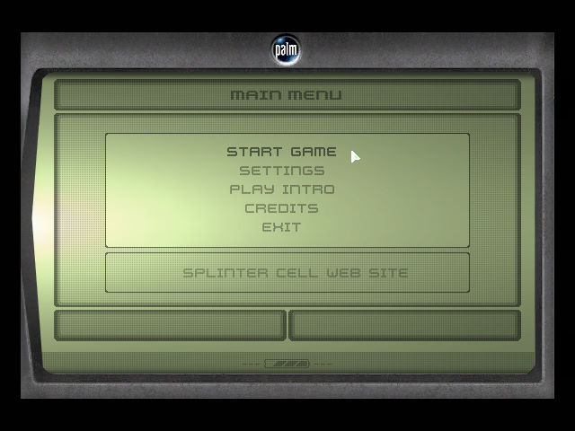
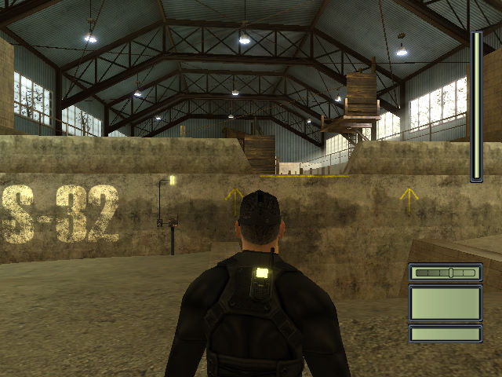
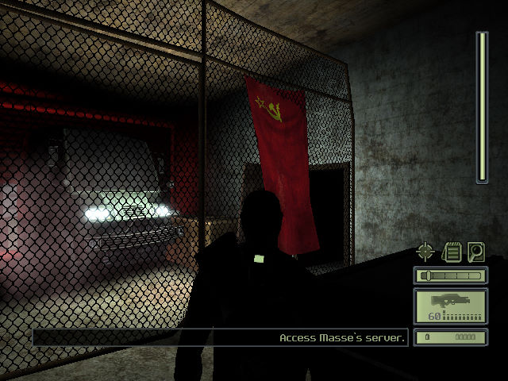

名稱：湯姆克蘭西之間諜遊戲1／縱橫諜海1／細胞分裂1／分裂細胞1 (Tom Clancy's Splinter Cell，英文版)
簡介：Ubisoft 2002年出品的潛行動作射擊遊戲，2003年移植至Windows，同年推出「任務包
（Mission Pack）」資料片。台灣由松崗代理進口，但並未中文化，以「威力加強版」
名稱銷售 [待補]。



保護：光碟SafeDisc 2.80。
備註：安裝資料片會將主程式更新至1.3版。
備註：VirtualBox無法執行，虛擬機請使用VMware。
檔案：nocd10.rar = 1.0免光碟檔
nocd13.rar = 1.3免光碟檔